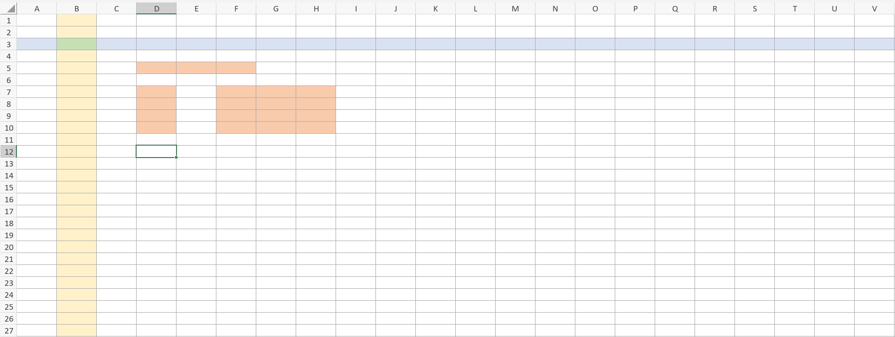

7. Interface dos editores de planilha
Independentemente da ferramenta que você escolha (Excel, Google Planilhas ou OnlyOffice), a área de trabalho da planilha é sempre a mesma: uma enorme grade organizada por letras e números, onde cada retângulo possui uma referência exclusiva e serve para guardar uma informação.
Observe atentamente cada uma das partes que compõem a interface na imagem a seguir:

Vamos entender cada umas dessas partes?
- Colunas: São as divisões verticais da grade, identificadas sempre por letras (
A,B,C...) posicionadas na parte superior da interface. Na imagem, a colunaBfoi pintada de Amarelo. - Linhas: São as divisões horizontais, identificadas por números (
1,2,3...) posicionados na lateral esquerda da interface. Na imagem, a Linha3foi pintada de azul. - Célula: É o retângulo gerado pelo cruzamento de uma linha com uma coluna. O nome ou endereço da célula é a combinação da letra com o número. Na imagem, o cruzamento da coluna
Bcom a linha3gera a CélulaB3, pintada na cor Verde. - Intervalo: É um conjunto de células selecionadas juntas. Sempre que nos referimos a um intervalo da planilha, indicamos o início desse intervalo pelo endereço da célula localizada no canto superior esquerdo (por exemplo,
F6) e o final do intervalo pelo endereço da célula no canto inferior direito (por exemplo,H10). Na linguagem das planilhas, nós escrevemos um intervalo usando o sinal de dois pontos (:) para separar os endereços de início e final (por exemplo,F6:H10). Sempre que você vê os dois pontos (:) entenda como se fosse a palavra "até". Na imagem, estão pintados de laranja os intervalosD5:F5,D7:D10eF6:H10.
O editor de planilhas é enorme
Uma planilha eletrônica parece infinita, mas ela tem limites! No OnlyOffice e no Excel, o tamanho máximo que uma única página pode ter é de exatamente 1.048.576 linhas e 16.384 colunas.
Mas atenção, só porque esse espaço existe, não significa que devemos tentar lotar a planilha até o final. Se você colocar informações demais (como o cadastro de todos os habitantes de uma grande cidade), o computador vai travar ou ficar muito lento ao fazer contas simples. O arquivo também corre um sério risco de corromper (dar um erro que o impede de abrir normalmente), fazendo você perder todos os seus dados.
Quando uma empresa precisa mexer com essa quantidade gigantesca de dados, o correto não é usar planilhas, mas sim um Banco de Dados (sistemas especiais criados apenas para guardar e processar milhões de informações com total segurança, rapidez e sem risco de travamentos).